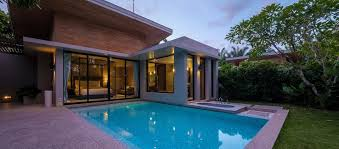

Procurando por uma casa com piscina? Nós temos a solução para você!
21 Novembro, 2024 | 21:45
Se você sonha em ter uma casa com piscina, seja para relaxar, fazer exercícios ou
simplesmente
curtir momentos de lazer com a família e amigos, você está no lugar certo! Selecionamos algumas das
melhores opções de imóveis com piscina do nosso catálogo, que vão atender às suas necessidades de
conforto e qualidade de vida.